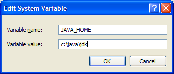
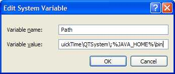

I have written
this page to help others on their new adventures with the Java
programming language. This is a step by step document on how to
download, install and execute the Java programming
language. Included in this document is a simple HelloWorld
application to make sure your compiler is working
correctly. If you want to see great Java success
stories please go to the world famous Java web page:
1) Download
Go to the Java
site and get the Java Standard Edition (SE)
and
make
sure you download the Java SE Development
Kit (JDK) which includes the Java Runtime Environment (JRE). The
JRE only executes Java programs, you can't do any development with
the
JRE, only execution. You don't need the Enterprise Edition (EE)
because
this
is Java 101, not Java 900. Read all the instructions and download
the
software to your system. Remember
where you put the download, my suggestion, put on your DESKTOP.
Click on the image below:
The suggested download for Java at the
time of this webpage release is:
| JDK / JRE with NetBeans IDE |
JDK 6 Update 6 with NetBeans 6.1 |
2a) Installation Directories - Pay Attention Here, SUPER IMPORTANT
STEP!!!
| Operating System |
JDK |
JRE |
NetBeans |
| Unix / Linux / Macintosh |
/usr/java/jdk |
/usr/java/jre |
/usr/java/netbeans |
| Windows |
c:\java\jdk |
c:\java\jre |
c:\java\netbeans |
2b)
Installation - Linux
Example:
export
JAVA_HOME=/usr/java/jdk
export PATH=$PATH:$JAVA_HOME/bin
2c) Installation - Windows
The
installation is self extracting so just double click the file and
follow the instructions.
Create a JAVA_HOME
environment variable as follows:

Update the Path
environment variable as follows, appending:
;%JAVA_HOME%\bin

You can also do this
from the command line as follows:
set
JAVA_HOME=<where you loaded
the jdk>
set PATH=%PATH%; %JAVA_HOME%\bin
For Example:
set
JAVA_HOME=c:\java\jdk
set PATH=%PATH%;%JAVA_HOME%\bin
2d) Installation - Macintosh
3) Test Installation
After doing the installation procedures
your ready to test. You can easily do
this by typing the command at any command prompt:
This will come back with something like the following: java full version "1.6.0_01-b03"
If you see this then Java was installed on your system and is executing that particular version. In this case we are executing JDK 6
4) Test Program (Helloworld.java)
Note: Follow the instructions exactly. Java is case and syntax specific, any deviation from these instructions with result in failure.
Suggestion: I would create
a directory where I would put all my personal Java files, e.g.
Now that the Java compiler is up and running lets try a quick test program. Below is the entire Helloworld.java program. Open up a new file called Helloworld.java and copy the following code into the new file using the editor of your choice and save the file, e.g. edit Helloworld.java
public class Helloworld {
public static void main(String[ ] args) {
System.out.println("Helloworld");
}
}
After you have saved the file then you will need to use the java compiler (javac) to compile your source code program (Helloworld.java) into Java byte code (Helloworld.class), type the following command:
javac *.java <- this will compile your source program.
Now execute the command to watch your hardwork in action:
java Helloworld <-- this will execute the Helloworld.class program.
You should see
Helloworld
5) Now to Really get started
Hopefully everything wen't well and now your on your way to being a Java Guru. Go to http://java.sun.com for excellent tutorials, downloads and information about Java.